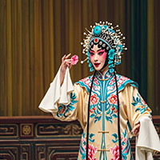
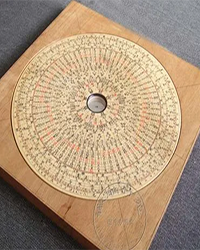
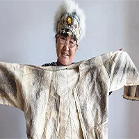
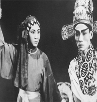

首页
非遗项目
非遗活动
传承人物
互动交流
朱世慧——国家级非物质文化遗产代表性项目京剧国家级代表性传承人
朱世慧是著名的京剧表演艺术家,专攻丑角,他的艺术成就和贡献在京剧界有着重要的影响，他的代表作《徐九经升官记,是湖北省京剧院的创作，自1980年首演以来，已经演出700余场，足迹遍布世界，成为京剧史上的一部经典之作。这部作品不仅荣获文化部优秀保留剧目大奖，而且朱世慧先生还将该剧目的演出戏服，历次剧本，舞美设计图，曲谱，演出剧照等完整捐赠给湖北省档案馆保存，进一步丰富了省档案馆的名人档案资源

吴水森——国家级非物质文化遗产项目——万安罗盘制作技艺的代表性传承人
吴水森是万安罗盘制作技艺的代表性传承人，也是国家级非物质文化遗产的传承人。他的工作主要集中在安徽省休宁县，这里的地方传统手工技艺万安罗盘制作技艺被列为国家级非物质文化遗产之一。万安罗盘制作技艺包括选料、车盘、分格、清盘、写盘、油货、安针等七道严格的工序。吴水森自小受家庭熏陶，继承了祖传的罗盘制作工艺，并在祖传技艺的基础上进行创新，开发了多种罗盘系列品种，规格从2英寸至2尺，圈层从2层到46层，品种达数百种。他的作品不仅精益求精，而且充分利用传统文化理念和吉祥图案，采用圆雕、浮雕、镂雕、书法、国画等艺术手法，精致美观地再现了传统文化产品的底蕴和新兴工艺品的创新艺术。

尤文凤——国家级非物质文化遗产项目赫哲族鱼皮制作技艺的传承人
鱼皮制品是利用北方冷水鱼的鱼皮制作的，冷水鱼皮质有一定的厚度和韧性且耐磨。尤文凤12岁便跟随母亲尤翠玉学习传统鱼皮制作技艺，初期制作简单的皮衣、皮裤。1970年后学会制作复杂的鱼皮衣裤、鱼皮翁得、孩童帽子、鱼皮包等。她制作的鱼皮衣物针脚细密，结实耐磨。尤文凤与母亲合作的多套鱼皮服饰已被黑龙江省民族博物馆收藏。

姚璇秋——家级非物质文化遗产代表性项目潮剧国家级代表性传承人
姚璇秋在《辞郎洲》中的表演艺术，获首都戏曲艺术界专家和表演艺术家老舍、田汉、罗合如、张庚、李少春、阿甲、胡沙等的高度评价。接着随团到南京、上海、杭州和南昌等地演出，广泛观摩各地兄弟剧种的表演艺术，与兄弟剧种进行艺术交流。向京剧大师梅兰芳、盖叫天，以及梅兰劳的高足魏莲芳学习。姚璇秋的唱功有深厚基础。她有一副天赋的好嗓子，又得名师指导，勤奋学习，有声腔演唱的正确方法。她发音自然，纯净大方，高音优美流畅，中低音圆润，音域较宽。“含咬吞吐”遵循传统的演唱规范。口形美观，咬宇清晰明亮，字字如珠，行腔宛转，收韵浑圆。
